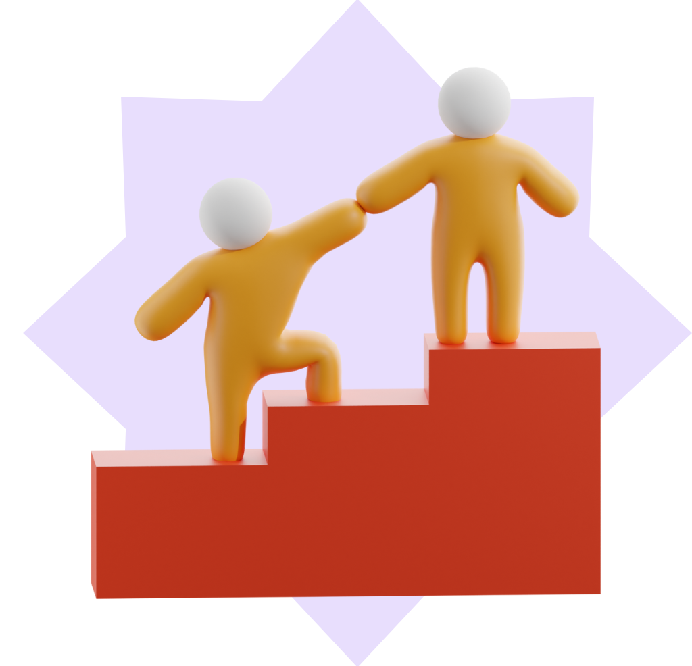

Empreendedor Cauteloso e Dependente
Esse perfil sugere uma abordagem mais cautelosa e uma preferência por evitar o risco e as incertezas. Essas pessoas podem ainda não estar totalmente preparadas para as exigências do empreendedorismo, precisando fortalecer a autoconfiança e desenvolver habilidades de proatividade e resiliência para alcançar objetivos empreendedores.